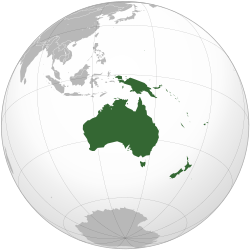
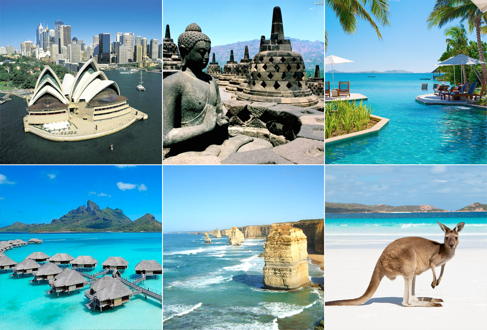

Oceania |
|
No total, a Oceania possui mais de 10 mil ilhas que constituem 14 países independentes, além de alguns territórios ultramarinos, como por exemplo, as Ilhas Marianas do Norte pertencentes aos EUA. Depois da Austrália, as maiores porções de terra da Oceania são as ilhas de Nova Zelândia e Papua Nova Guiné. A população da Oceania se constitui de caucasianos, aborígenes e asiáticos, sendo o grupo dos caucasianos predominante em todo o continente devido ao processo de colonização, bastante tardio por sinal. A colonização da Oceania se iniciou de fato, apenas em 1779 quando os presos ingleses começaram a ser enviados ao local para cumprir suas penas. |

